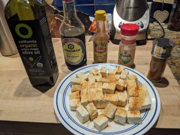

Tofu

Ingredients:
- Tofu, olive oil, sesame oil, soy sauce, garlic powder, paprika
How to make it:
Put in air fryier for 10-15 min. Flip in the middle. I used a Ninja but you can also steam, bake, or pan fry it.
Resources
- This is the original recipe: https://www.youtube.com/watch?v=BA1AqBizekg